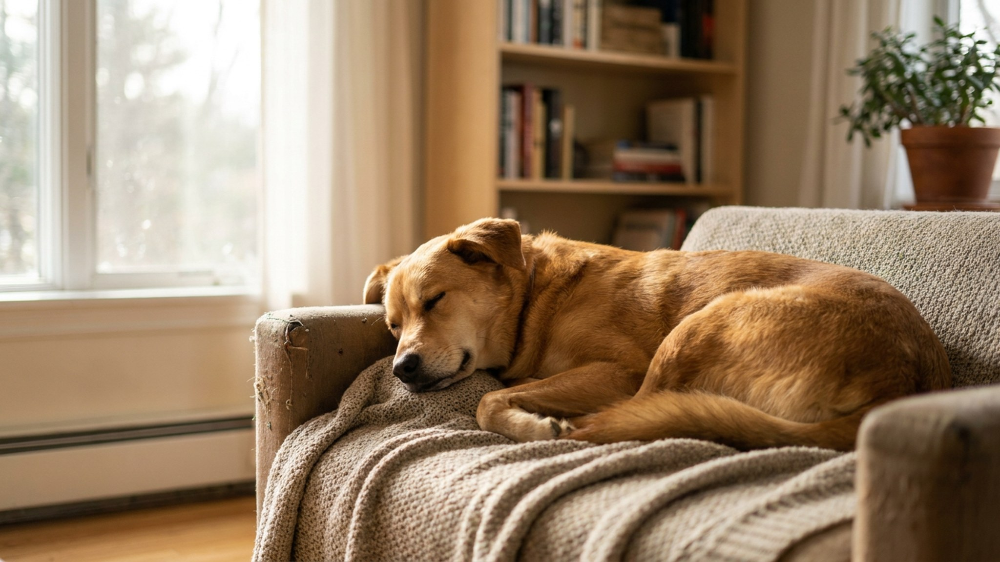

Собака спит 12–14 часов в сутки. За это время она принимает очень разные позы — и каждая из них говорит что-то о её внутреннем состоянии. Как собака спит — это одна из самых честных вещей, которую она вам показывает. Шесть поз, что они означают и как быстро оценить уровень стресса по позиции во сне.
🐾 Первая помощь — всегда под рукой
AnimaLife подскажет, что делать в тревожной ситуации с питомцем ещё до визита к врачу. Откройте в один тап.
Во сне мышечный контроль ослаблен, сознательного управления позой нет. Тело занимает позицию, которую определяют два фактора: температурный комфорт и ощущение безопасности. Собака, которая не чувствует себя в безопасности, не будет спать в позах, открывающих уязвимые части тела.
Именно поэтому поза сна — надёжный индикатор. Если ваша собака позволяет себе спать «на спине с лапами вверх» — это невозможно скрыть или сыграть. Это подлинная расслабленность.
Собака лежит на боку, лапы вытянуты или слегка согнуты. Голова на боку или на подстилке. Это самая частая поза глубокого сна.
Что говорит: высокий уровень расслабленности и доверия. Бок открывает живот и жизненно важные органы — в этой позе нельзя мгновенно вскочить. Собака в позе «бок» чувствует себя в безопасности в данной среде.
Сон: в позе «бок» собаки чаще всего входят в фазу глубокого и REM-сна (быстрые движения глаз, подёргивание лап, лай во сне). Это признак качественного восстановительного отдыха.
Собака свернулась, нос подтянут к хвосту, лапы под телом. Тело образует круг или полукруг.
Что говорит: умеренный уровень расслабленности, часто — реакция на температуру (холодно) или лёгкая настороженность. В этой позе собака быстро может встать. Живот закрыт и защищён.
Нормально или нет: «бублик» — норма, особенно в прохладную погоду или на новом месте. Если собака всегда спит только так, даже в тепле — возможно, ей некомфортно или тревожно в данной среде.
Собака лежит на животе, передние лапы вытянуты вперёд, задние — назад. Голова лежит на подстилке или поднята.
Что говорит: переходное состояние между бодрствованием и сном. Собака хочет спать, но готова вскочить при первом сигнале. Часто характерно для активных собак, которые не хотят «пропустить» что-то интересное, или для собак в незнакомой обстановке.
Температурный момент: эта поза также помогает охладиться — живот и подмышки прижаты к прохладному полу. Летом в жару это нормально даже для расслабленных собак.
Собака лежит на спине, лапы торчат вверх, живот полностью открыт. Иногда голова чуть набок.
Что говорит: максимально возможный уровень расслабленности и доверия. Это самая уязвимая поза — живот, шея, пах открыты. Собака физически не может быстро встать из этой позиции. Если она в ней спит — значит, чувствует абсолютную безопасность.
Температурный момент: на спине хорошо отдаётся тепло через живот. В жаркую погоду — частая поза у пород с густым подшёрстком (хаски, лайки, самоеды).
Если никогда не спит на спине: это не обязательно тревожный знак — некоторые собаки просто анатомически неудобно расположены для этой позы (крупные, широкогрудые породы). Но если раньше спала так, а потом перестала — обратите внимание.
Собака спит, прижавшись к вашим ногам, боку, стене или другой собаке. Физический контакт — принципиальная часть позы.
Что говорит: потребность в близости и безопасности. Физический контакт снижает уровень кортизола (гормона стресса) у собак — это подтверждено исследованиями. Прижаться к хозяину или стене означает «за спиной безопасно» — меньше направлений, откуда может прийти угроза.
Если усилилось: если собака, которая раньше спала отдельно, начала постоянно прижиматься — это может сигнализировать о повышенной тревожности. Обратите внимание, что изменилось в среде.
Собака лежит как сфинкс: голова поднята или лежит на передних лапах, задние лапы под телом. Напоминает позу льва в покое.
Что говорит: дремота, а не глубокий сон. Собака отдыхает, но мониторит среду. Часто позу «лев» принимают собаки-охранники или животные, которые чувствуют ответственность за пространство. Также — начало или конец сна.
Поведенческий нюанс: собака в позе «лев» с ушами направленными вперёд и напряжённым взглядом — не спит, а наблюдает. Это не «уснула» — это «несёт вахту».
🐾 Экономьте на лишних визитах к врачу
Сначала спросите AI-ветеринара в AnimaLife — часто этого достаточно, чтобы понять, нужен ли визит к врачу.
🐾 Понравился разбор?
Подпишитесь на канал — каждый день разбираем по одному тревожному симптому у кошек и собак: что в пределах нормы, а когда пора к врачу. Подпишитесь, чтобы не пропустить разбор, который может спасти здоровье вашего питомца.
Простой алгоритм наблюдения:
Помимо позы, важно наблюдать, где собака выбирает спать. Переезд из любимого места (ваша кровать, диван, конкретный коврик) в угол или под мебель — тревожный сигнал. Собаки прячутся, когда им плохо: физически или эмоционально.
Если собака начала прятаться для сна без видимой причины, не реагирует на зов и выглядит вялой — это повод к ветеринару, а не просто наблюдение.
Сон занимает больше половины жизни вашей собаки. Как она это делает — честный показатель того, насколько ей хорошо рядом с вами. Бок и лапы вверх — лучший комплимент, который она может вам сделать.